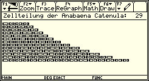

Mehr Screenshots und Info
|
| [6.1. Cdiv (ad 2.2.)] |
| [6.2. Phyllo (ad 4.1.)] |
| [6.3. Lsys] |
| [6.4. Ifs (ad 5.)] |
Da unsere Klasse in der 5. Schulstufe mit programmierfähigen TI-92 Taschenrechnern ausgestattet wurde und die Programmiersprache TI-Basic primitiv und dadurch sehr verständlich (aber leider auch sehr langsam) ist, habe ich vier Programme in dieser erstellt, um verschiedene Objekte zu visualisieren.
Alle Programme inkl. Transfersoftware befinden sich auf der beiliegenden CD.
 |
6.1. Cdiv (ad 2.2.) |
|
In Cdiv wird folgendes Modell der Anabaena Catenula (siehe Kapitel 2.2. und 2.7.1.) veranschaulicht, welches auch die kontinuierlichen Wachstumsphasen der einzelnen Zellen in mehreren Zwischenschritten berücksichtigt:
Durch Beobachtungen im Labor weiß man, dass die kleinen Zellen im Durchschnitt 20% mehr Zeit zum Reifen bis zur Teilung benötigen. Aus einer großen Zelle B entstehen innerhalb von vier Schritten Zustände, die mit C,D,E und F bezeichnet werden. Anschließend findet eine Teilung statt, und es entstehen entweder zwei Zellen AB oder BA, je nachdem, ob die ursprüngliche Zelle eine rechte oder linke Tochterzelle war. Eine kleine Zelle A benötigt hingegen einen Schritt mehr bis zur Teilung. Dies kann durch einen Übergang vom Typ A zum Typ B leicht modelliert werden. Die Reifungsprozedur lässt sich in Strings wie folgt veranschaulichen:
Ar → Br → Cr → Dr → Er → Fr → BlAr bzw. Al → Bl → Cl → Dl → El → Fl → AlBr
Dieses DOL-System ist nun so definiert:
G = ({Ar, Al, Br, Bl, Cr, Cl, Dr, Dl, Er, El, Fr, Fl}, Al, { Ar→Br, Br→Cr, Cr→Dr, Dr→Er, Er→Fr, Fr→BlAr, Al→Bl, Bl→Cl, Cl→Dl, Dl→El, El→Fl, Fl→AlBr})
| 1 - 6 | 7 - 12 | 13 - 18 | 19 - 24 |
| Al | AlBr | AlBrClBr | AlBrClBrClDrClBr |
| Bl | BlCr | BlCrDlCr | BlCrDlCrDlErDlCr |
| Cl | ClDr | ClDrElDr | ClDrElDrElFrElDr |
| Dl | DlEr | DlErFlEr | DlErFlErFlBlArFlEr |
| El | ElFr | ElFrAlBrFr | ElFrAlBrFrAlBrClBrAlBrFr |
| Fl | FlBlAr | FlBlArBlCrBlAr | FlBlArBlCrBlArBlCrDlCrBlCrBlAr |
Wie man sieht, sind diese abstrakten Zeichen nicht sehr anschaulich, deshalb ist der TI-92 eine gute Hilfe zur Übersetzung der Strings in Bilder. In diesem Progamm werden die Algensegmente durch verschieden lange Rechtecke (in einzelnen Bildern gespeichert) grafisch visualisiert (Abb. 6.1 (a) und (b)).
Abb. 6.1 (a) |
 Abb. 6.1 (b) |
Der Aufbau der Alge bis zum 29. Zustand kann bis zu 1 Minute lang dauern.
Hier ein Programmausschnitt, der zur Ersetzung dient:
| Listing | Erklärung |
| Initialisiere k | |
| For-Schleife (für i von 1 bis zur Länge der Inputliste) | |
| Inkrementiere k | |
| Segment bei i wächst und wird in cellst gespeichert | |
| Wenn aktuelles Segment Fl (=6), dann: | |
| Zellteilung und wiederholte Inkrementierung von k | |
| Wenn aktuelles Segment Fr (=12), dann: | |
| Zellteilung und wiederholte Inkrementierung von k | |
| Ende der For-Schleife | |
| Rückkoppelung (Outputliste wird zur Inputliste) |
Die Input- und Outputlisten werden als cells bzw. cellst bezeichnet. Die dazugehörigen Positionszeiger sind i und k, die in jedem Durchlauf (k bei jeder Teilung zusätzlich) inkrementiert werden.
In den If-Schleifen wird der Wert an Position i der Liste cell überprüft und nach Berücksichtigung der Ersetzungsregeln ein neuer Wert (bei Teilung 2 neue Werte) in die Liste cellst eingesetzt. Die Zahlen 1 bis 6 und 7 bis 12 stehen für Al, Bl,..., Fl bzw. Ar, Br,..., Fr.
Die Schleife für die grafische Darstellung lautet:
| Listing | Erklärung |
| Initialisiere k | |
| Initialisiere X-Position (=Abstand vom linken Bildschirmrand) | |
| For-Schleife (für i von 1 bis zur Länge der Liste) | |
| Ermitteln des Bildnamen für aktuelles Segment | |
| Zeichnen des Bildes | |
| Inkrementieren der X-Pos. um richtigen Wert | |
| Korrektur der X-Pos. (nur bei einem rechten Segment) | |
| Ende der For-Schleife |
Die den Symbolen Al - Fl und Ar - Fr entsprechenden Bilder heissen pic_1, pic_2,..., pic_6 bzw. pic_7, pic_8,..., pic_12. Diese werden am Beginn des Programmes durch Matrizen mit dem Befehl NewPic initialisiert, was den Großteil des Programmlistings ausmacht.
Das Programm läuft bis zur 29. Stufe der Zellteilungen der Alge, um eine mehrzeilige und dadurch unübersichtliche Kette zu vermeiden.
Cdiv kann durch Überprüfen mit getkey() auf den Wert 264 jederzeit durch Drücken der ESC-Taste beendet werden.
|
6.2. Phyllo (ad 4.1.) |
|
Dieses sehr einfache Programm zeichnet in einem bestimmten Radius die Verteilung von Kernen in einer Pflanzenblüte (siehe Kapitel 4.1.). Dazu wird das (von mir gezeichnete) Bild seed für die einzelnen Samen benutzt. Es muss ein Parameter bestimmt werden, der die Abweichung vom goldenen Schnitt angibt (d.h. phyllo(0) zeichnet die korrekte Version). Screenshots in Abb. 6.2 zeigen die korrekte Version in (a) und 2 mit geringfügigen Abweichungen in (b) und (c).
Hier das komplette Programmlisting:
Listing: Erklärung: phyllo(del) Prgm setMode("Exact/Approx","APPROXIMATE") Rundung einstellen setMode("Angle","DEGREE") Grad auf Degree stellen ClrDraw:Local ang,del,i,r:0àang Initialisierung For i,40,43 Zeichnet 3 Kreise mit Radien 40 bis 43, die den Rand der Blüte bilden PxlCrcl 53,120,i EndFor For i,1,120 Beginn der For-Schleife für 120 Kerne RclPic seed,int(50+sin(ang)*3.7*Ö(i)),int(118+cos(ang)*3.7*Ö (i)) Stellt seed dar ang+137.50776405004+delàang Inkrementiert den Winkel EndFor Ende der For-Schleife EndPrgm
Die Anzahl der Kerne (120), die Konstante c (3.7) aus der Formel r=c ,n (siehe Kapitel 4.1.) sowie die Kreisradien (40-43) und Kreismittelpunkte (120,53) sind willkürlich gewählte Werte.
Die Darstellung der Kerne dauert höchstens eine halbe Minute.
Abb. 6.2 (a): phyllo(0)
Abb. 6.2 (b): phyllo(.3) Abb. 6.2 (c): phyllo(-0.3)
|
6.3. Lsys |
|
Lsys ist das komplexeste Programm, dass ich hier aus Platzmangel nicht vollständig beschreiben kann. Vielmehr möchte ich die essentiellen Bestandteile des Programmes aufzeigen und auf die Beschreibung von unwichtigen Überprüfungsroutinen u.ä. verzichten.
6.3.1. Aufbau
Für mehr Übersichtlichkeit und Schnelligkeit wurde Lsys als Programmkomplex gestaltet (konkrete Programme bzw. Unterprogramme werde ich durch kursive Kleinbuchstaben und angehängten Parameterklammern "()" kennzeichnen):
lsys():
befindet sich als einziges im "Main"-Ordner und ist das auszuführende Programm. Es ist zuständig für die Initialisierung, die Eingabe, die Berechnung und Darstellung und die Aufrufung der jeweiligen Unterprogramme (d.h. es ist das Grundgerüst, von dem aus Verzweigungen stattfinden, die regelmäßig zurückführen müssen). Ausserdem ist lsys() der größte Bestandteil von Lsys.
lmap1() - lmap7() und lmape():
Diese kleinen Unterprogramme stehen für die verschiedenen vordefinierten Lindenmayer-Systeme, da sie die Produktionsregeln enthalten und bei jeder Iteration aufgerufen werden müssen. Sie sind modulartig aufgebaut, wodurch sie leicht umgeändert werden können, was das Update von neuen Modulen erheblich erleichtert. Diese pseudo-objektorientierte Struktur soll auch helfen, einen leichteren Überblick über die Programme zu gewinnen.
lmape() wird bei einem durch den Benutzer definierten L-System verwendet.
Im Durchschnitt sind diese Module ca. 500 Byte klein.
lhelp():
Im Großteil dieses Programmes befindet sich Hilfetext, wodurch sich die Größe von ca. 4700 Byte erklärt. Neben einer generellen Erklärung wird außerdem jedes System einzeln beschrieben und vorgegebene Daten zur direkten Übernahme in das Hauptprogramm verfügbar gemacht. Falls unklarheiten bestehen sollten, was die Bedeutung der Variablen angeht, finden sich hier ausführliche Erklärungen.
6.3.2. Programmablauf
· Verschiedene Mode- und Graph-Einstellungef und Deaktivierung aktiver Funktionen und Pdots · Definition der lokalen Varaablen und Ifitialisaerung der Datenmatrix ldat für lhelp() · Eingabedialog mit Systemauswahl, möglicher Verzweigung zu alternativem Eingabedialog (selbst definiertes System) oder zur Hilfe lhelp() (DropDown) und Parametereingabe (Request): Listing: Erklärung: Lbl fstwndw lfc_àlfc:ddg_àddg:deg_àdeg:strl_àstrl:sth_àsth:ax_àax:drax_àdrax:out_àout Duplikation der benötigten Variablen für temporären Zugriff Dialog Title "Lsys - Axiom, System und Parameter bestimmen" Request "Axiom",ax Axiomeingabe DropDown "System:",{"Primitiver Busch","Stochastisches Kraut","Szellsches Kraut","Komplexer Busch","Primitiver Baum","Koch-Kurve","Zufàllige Koch-Kurve","Eigenes","HILFE"},muse Auswahl des jeweiligen L-Systems (8 für eigenes oder 9 für Hilfe) Text " Parameter:" Request " ?",ddg Eingabe des Drehwinkels ? Request " l",lfc Eingabe der Einheitslänge im Axiom Request "Sf",strl Eingabe des Streckfaktors Request " ?",deg Eingabe des Gesamtwinkels ? Request " h",sth Eingabe der y-Koordinate des Stammes EndDlog If ok=0:Goto ende Bei Drücken von ESC beende das Programm lfcàlfc_:ddgàddg_:degàdeg_:strlàstrl_:sthàsth_:axàax_:draxàdrax_:outàout_ Speicherung der temporären Variablen in setMode("exact/approx","exact") If muse=9 Then Wenn Auswahlindikator auf 9, dann lhelp() Aufrufung des Hilfeprogrammes Goto fstwndw Gehe zu fstwndw EndIf · Lbl alfa: Berechnung des Systems in einer For-Schleife durch Benutzung der jeweiligen Module (Aufrufung eines der Unterprogramme lmap1() - lmap7()) Listing: Erklärung: Lbl alfaLoopClrDrawLöschen des Bildschirmessysbàsysa:sthàypos:2àxpos:1àjZuweisung der Listengröße und Position des StammansatzesIf drax=1:Goto drawWenn drax=1, gehe zu draw"lmap"&string(muse)&"()" à#"modul"Verankerung des gewählten Programmnamens mit der Variable modulFor i,1,dim(sysa)Schleife zur Erstellung der Liste expr(modul) Anwendung der jeweiligen Produktionsregeln für das gewählte System durch Benutzung des geeigneten Moduls EndFor Ende der Schleife · Lbl draw: Zeichnen des Systems in einer For-Schleife durch Laden der einzelnen Listenelemente Listing: Erklärung: Lbl draw For i,1,dim(sysb) If sysb[i]=0 Then Wenn sysb[i]=0, dann Try PxlLine int(ypos),int(xpos),int(ypos+lfc*sin(deg)),int(xpos+lfc*cos(deg)) Zeichne eine Linie PxlCrcl int(ypos+lfc*sin(deg)),int(xpos+lfc*cos(deg)),int(lfc*0.1+1) Zeichne ans Ende der Linie eine entsprechende Knospe Else Falls Teile des Bildes außerhalb des Bildschirms, 1àout setze Indikator out auf 1 EndTry ypos+lfc*sin(deg)àypos Setze die Schildkröte auf die entsprechende neue Position xpos+lfc*cos(deg)àxpos EndIf If sysb[i]=1 Then Try PxlLine int(ypos),int(xpos),int(ypos+lfc*sin(deg)),int(xpos+lfc*cos(deg)) Zeichne eine Linie ypos+lfc*sin(deg)àypos Setze die Schildkröte auf die entsprechende neue Position xpos+lfc*cos(deg)àxpos Else Falls Teile des Bildes außerhalb des Bildschirms, 1àout setze Indikator out auf 1 EndTry EndIf If sysb[i]=2:deg+ddgàdeg Wenn sysb[i]=2, negative Drehung If sysb[i]=3:deg-ddgàdeg Wenn sysb[i]=3, positive Drehung If sysb[i]=4 Then Wenn sysb[i]=4, dann tind+1àtind Inkrementiere den Klammerindikator "temp"&string(tind) àtuse Erstelle temporäre Datei, die den Zustand der Schildkröte speichert {ypos,xpos,deg}à#tuse EndIf If sysb[i]=5 Then Wenn sysb[i]=5, dann #tuse[1] àypos:#tuse[2]àxpos:#tuse[3]àdeg Lade Daten aus der temporären Klammerdatei und lösche sie DelVar #tuse tind-1àtindDekrementiere den Klammerindikator und benenne ihn entsprechend um"temp"&string(tind)àtuseEndIfEndFor
Programmintern bestehen die Listen sysa und sysb aus den Zahlen 1 bis 5, die folgende Bedeutungen haben:
0 eine normale Linie mit einer Knospe in entsprechender Größe (nutzvoll für Büsche) 1 F (normale Linie) 2 + (Drehung um deg gegen den Uhrzeigersinn) 3 - (Drehung um deg gegen den Uhrzeigersinn) 4 [ (Beginn einer Verzweigung) 5 ] (Ende der Verzweigung)
Der Indikator out kennzeichnet einen nicht dargestellten Bereich des Objektes (weil außerhalb des Bildschirmes liegend) und iniziiert nach der Grafikroutine ein Fehlerfenster, falls er auf 1 gesetzt wurde.
|
6.4. Ifs (ad 5.) |
 |
Zum Schluss sollen noch zwei kleine Programme namens ifs01() und ifs02() vorgestellt werden, die ich vom Pascal-Programmcode aus [5], Seite 178 f., auf den TI-92 abgeändert habe. Da die Algorithmen bis auf einige Kleinigkeiten gleich sind, befindet sich nur das Listing von ifs01() in diesem Kapitel mit Screenshots von beiden Programmen. Es wäre möglich gewesen, noch mehr Programme dieser Art zu erstellen (ifs03(), ifs04(), usw.), doch wäre das reine Übertragen von Werten aus [5], Kapitel 13, nur Energieverschwendung gewesen.
Listing: Erklärung: ifs01() Prgm setMode("Exact/Approx","APPROXIMATE") ClrDraw:FnOff :PlotsOff setGraph("axes","off"):setGraph("grid","off") {0,0.197, 0.155,0.849}àa_ Zuweisung der entsprechenden Tabellenwerte (siehe Tabelle auf Seite 46) {0, 0.226,0.283,0.037}àb_ {0,0.226,0.26, 0.037}àc_ {0.16,0.197,0.237,0.849}àd_ {0,0,0,0}àe_ {0,1.6,0.44,1.6}àf_ {0.03,0.14,0.27,1}àp_ 0àx_:0ày_ For i_,1,20000 Beginn der For-Schleife (der Wert 20000 ist willkürlich gewählt) rand()àpk Bestimmung einer Zufallszahl If pk=p_[1] Then:1àk_ Transformationswahl durch die in p gespeicherten Wahrscheinlichkeiten und der Zufallszahl pk ElseIf pk=p_[2] Then:2àk_ ElseIf pk=p_[3] Then:3àk_ Else:4àk_ EndIf a_[k_]*x_+b_[k_]*y_+e_[k_]àx1 Ausführung der gewählten Transformation c_[k_]*x_+d_[k_]*y_+f_[k_]ày_ x1àx_ PxlOn int(58-x_*22),int(234-y_*23) Zeichnen des Pixels EndFor EndPrgm
Abb. 6.3: Ein durch ifs01() erstellter Barnsley-Farn nach Abbruch des Programms beim 7781. Schritt (links);
ein durch ifs02() erstellter kiefern-ähnlicher Baum nach Abbruch des Programms beim 14780. Schritt (rechts)